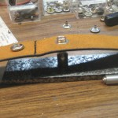
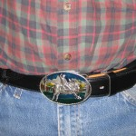
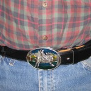

Being Cheep
Recently my trusty old belt of 20 some years wore out. I priced belts in several clothing store’s and about went into shock. Forty dollars for a plain strip of leather B.S. Even the discount stores were over priced. Now I admit I needed to be able to change buckles easily as I prefer my own buckle. That should have lowered the price as I didn’t need a buckle. Instead it lowered selection greatly.
Fate smiled on me as I was walking through a Flee Market in Mobile Alabama last February. Off to the back of his display were the two belts shown below. Inquiring, the vendor pointed out that both had problems. One was missing the buckle and the other had a blemish in the leather. I looked them over while trying hard to show disappointment in my face. This was somewhat difficult as these belts were perfect for what I needed. I pointed out that because he was such a pleasant fellow I would help him out by taking these useless items off his hands and pay him a couple of dollars. He pointed out he had paid dearly for these new belts and that they were of premium leather. After several minutes of discussion we arrived at a compromise of less than five dollars for the two.


Above are the belts and my favourite buckle. As you can see the belts are too long and have no way to attach the buckle. I determined the belt length I needed by slipping the buckle on the belt and holding the belt around me. Than I clamped the belt as you can see in the next picture. On the work bench are some snaps that I had purchased in the late 1980′s for fixing leather jackets. Next I used my trusty sharpie and a small ruler to mark the spot. Note the awl I used to center punch the spot for drilling. It is made from a worn out Philips screwdriver, the large handle make it great to handle. I used a freshly sharpened metal bit for drilling the holes.
Below I crimp the snaps in place note I installed the first snap before I made the hole for the second snap. That way alignment is guaranteed. I use a piece of quarter inch scrap steel that is 1.25 by 6 inches to protect the desk top that I use for a work bench. The snaps are riveted in with a special punch so the protection is needed. all that’s left, is to mark and cut the extra off.
  The finished product 
The finished product 
Not a big deal of a project but I have a new work belt for a couple of bucks and some fun. I did this all a month ago but spring came early so I did not get around to finishing this till now.
No, I didn’t win the Bull Riding buckle in some long ago competition, when I was young and tough. I’ll admit I have spun a few late night stories to acquaintance’s, they were ment solely for entertainment. The truth is I acquired a lot of them back when I was selling on the circuit. The thing that always got me in trouble was, “how much would they be if I took them all”. If you feel a need for a few ( or several), get in touch with me. all are serial numbered, limited edition, vintage 1980′s.
Leave a comment
You must be logged in to post a comment.